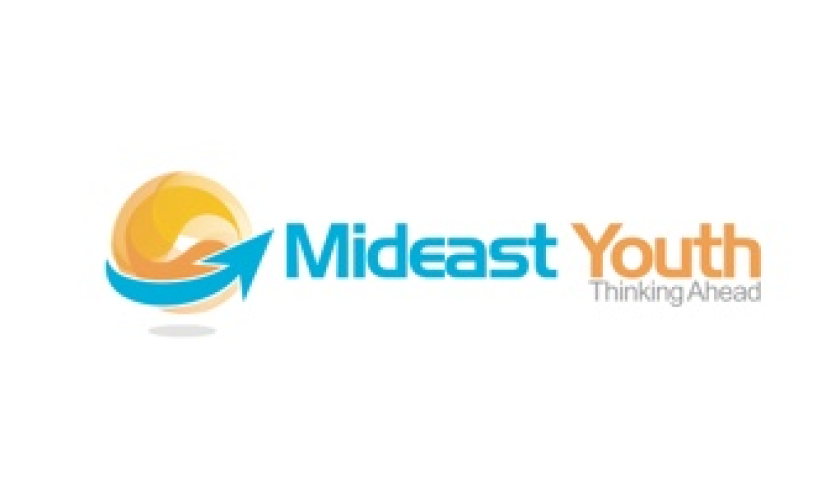
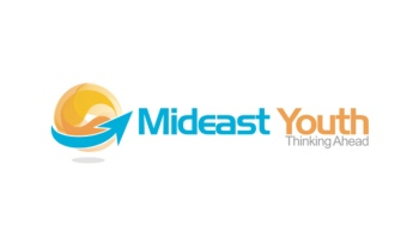
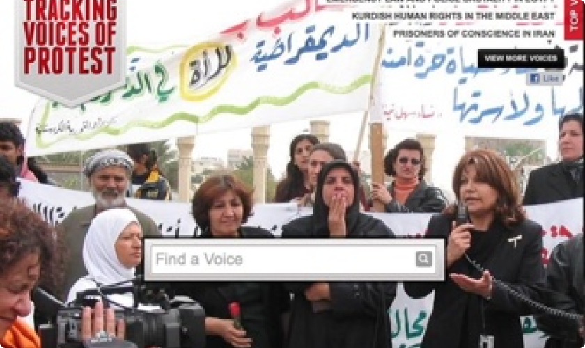
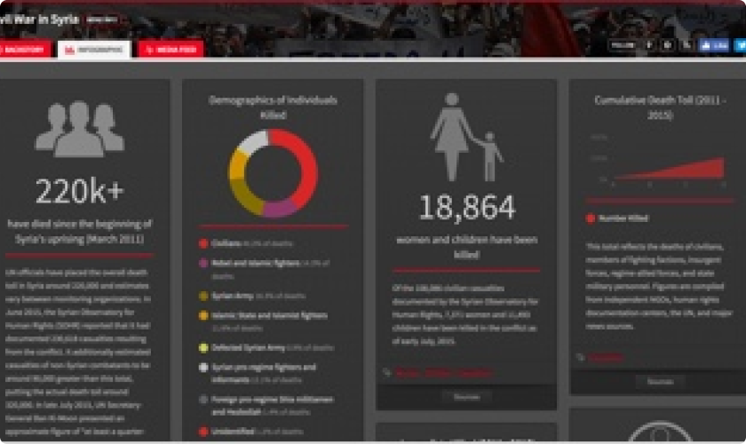
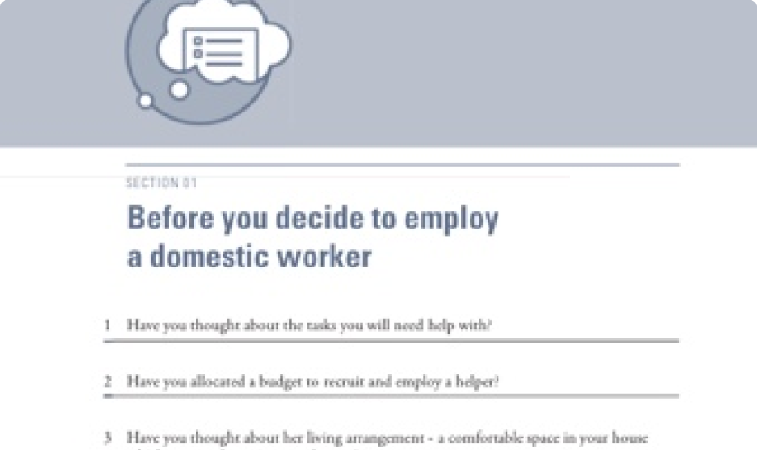

May 2006
Mideast Youth Launches
Mideast Youth is founded and launched in Bahrain.
Majal was launched in 2006 as Mideast Youth. It began as a community-run portal to discuss pressing issues in the Middle East and North Africa. As its influence grew, we began developing new tools that helped us communicate a range of underrepresented causes to wider audiences. Today, we continue striving for new and innovative ways to make marginalized voices heard.
Mideast Youth is founded and launched in Bahrain.
Mideast Youth launches Migrant Rights to document the plight of migrant workers across the region.
Together with its Kurdish volunteers, Mideast Youth launches KurdishRights.org to raise awareness about and defend the rights of the Kurdish people throughout the Middle East.

BahaiRights.org is founded to ensure that the Baha'i community has equal opportunities and the ability to freely practice their faith in Muslim societies.

Mideast Youth launches a video platform to curate content from vloggers across the region.

Mideast Youth launches MEFaith, which aggregates content from religious bloggers across the region representing diverse faiths, including perspectives from local Christians, Jews, Baha’is, Hindus, Muslims, and members of the atheist community.
The Farsi version of Mideast Youth is launched and discontinued just two years later due to censorship and in order to protect our members in Iran.


We launched an automated generator that enables users to create a widget to place on their blogs in order to increase awareness of imprisoned bloggers. It includes a counter of how long they’ve been in prison, calls to action, and access to a database of other imprisoned bloggers around the world.

Mideast Youth launches mobile applications to showcase some of the best content from the region including curated podcasts, videos, blogs and social media.
The Arabic version of Mideast Youth launches, serving as a home for hundreds of bloggers across the Arab world who want to share their articles to a wider regional network. Articles include writings from current political prisoners in the Arab world.

Mideast Youth launches a bilingual weekly podcast covering a range of issues, from LGBT rights to gender equality to religious freedom.

Mideast Youth receives a Berkman Award, along with its first ever grant in the amount of $10K, from the Berkman Center for Internet and Society at Harvard Law School.
We launched a web-based application that enables users to see in realtime what people in the region were tweeting about, along with the trending topics.

The March 18 Movement launches to mark the death of Iranian blogger Omid Reza Mirsayafi, who was one of the first bloggers to die in prison.
With this fellowship we secure our second ever grant, in the amount of $60K from the Echoing Green foundation to support Mideast Youth’s ongoing growth.

The TED Fellows program provides support to an international community of visionaries who collaborate across disciplines to create positive change around the world.
Mideast Youth launches its services program, assisting nonprofits across the region in the creation and maintenance of their websites, creating custom plugins for campaigns and mobile applications, as well as offering free domains and hosting to grassroots organizations with limited resources.

Mideast Youth receives a ThinkSocial Award from the Paley Center for Media for serving as a “powerful model for how social media can be used to address global problems.”

Mideast Tunes launches its web and mobile applications.
Mideast Youth becomes a finalist in the 2010 Viral Video Award for its animated short on migrant workers in the Middle East.
CrowdVoice.org launches out of beta.

CrowdVoice plays a critical role in the archiving and preservation of citizen video and is used by international media to efficiently sift through thousands of pieces of media. The site gets censored in Bahrain and Yemen.

The first phase of the Ahwaa platform is launched.

The Senior Fellowship is a promotion of the TED Fellow status to provide greater support and a wider community.

Mideast Youth helps launch the "Can You Solve This?" campaign for the right of education in Iran.
CrowdVoice wins award at an Ashoka Changemakers global competition.

Mideast Youth is awarded the Monaco Media Prize, which acknowledges innovative uses of media for the betterment of humanity.

Mideast Youth is featured as one of Top 100 NGOs by the Global Journal magazine.
Migrant-Rights.org is awarded the jury prize for Best Blog in the category of Human Rights.
The Making of a Century iPad app launches, which interactively showcases revolutionary leaders and movements that helped shape the last 100 years. Watch the demo.
CrowdVoice is awarded a fellowship from the Shuttleworth Foundation, which supports open source projects in achieving their fullest potential for social impact.

Mideast Youth is formally registered as a nonprofit in the Netherlands, despite having its physical base in the Middle East, in order to protect our finances from being frozen by regional governments.
Mideast Tunes undergoes a significant overhaul, completely relaunching its web and mobile applications with a wide range of new features.
Mideast Youth wins the People’s Choice Award for best in online activism.
CrowdVoice relaunches with significant improvements and additional features such as interactive timelines and infographics.
Mideast Tunes receives a grant from AFAC to grow its regional presence and develop significant improvements to the performance of the app and its offering.
Human Rights Tulip Prize Awarded
Mideast Youth wins the People’s Choice Award for best in online activism.
Mideast Tunes wins a grant from the Ebticar competition, which awards innovative ideas in digital media from the Arab world.
With the funds obtained from the Tulip Prize, Mideast Youth meets in the Hague for the very first time after years of working together remotely.
Mideast Youth receives a Knight Prototype Fund to develop CrowdVoice.by.
Migrant Rights, in collaboration with Hivos, launch the Shelter Me project to reduce the isolation of domestic workers by informing their choices pre-departure and post-arrival.
Majal founder Esra’a wins “Most Courageous Media” award from Free Press Unlimited.
Mideast Tunes launches a weekly podcast on the intersection of alternative music and social change in the Arab world.
Julia Gómez is selected as a Gifted Citizen in Mexico for her work with CrowdVoice.
Mideast Youth announces its rebranded identity as Majal.
Migrant-Rights.org, in partnership with the Shelter Me Project, launches a guide on employing migrant domestic workers, used widely.
CrowdVoice.org surpasses 500 topics, ranging from issues such as elections, environment, human rights, and armed conflicts.
The Blossom Hill Foundation supports innovative leadership for Middle East youth by investing in the bold ideas of social entrepreneurs who are committed to improving the lives of their communities and crafting a bright future.
Mideast Tunes runs training sessions for young people in the Arab world who want to improve their digital media skills, especially in the fields of music and podcasting.
Mideast Tunes launches Chrome and Firefox plugins to make its music directory more accessible.
Mideast Tunes launches an interactive audio map to help users explore up and coming indie artists around the region on a monthly basis.
Open Web Fellows are talented technologists who are passionate about privacy, security, and net neutrality. Fellows embed with international nonprofits for 10 months to work on independent research and project development. Majal served as a host organization for an Open Web Fellow from Venezuela to work on internal open source Ruby on Rails applications.
Mideast Tunes developed a cooperative partnership with the Underground Producers Alliance to build “Taqsim: Borderless Sound Archive”, a database of regionally-specific audio samples for free artistic use. Taqsim enables musicians, producers, and even listeners from the MENA region to communicate through sound, improvisation, and collaboration.
Mideast Tunes produced a short documentary on Palestinian artists. The film examines both the artists’ personal experiences and the context behind their music: what they sing about, for what purpose, the political and social themes they confront, and their effects on Palestinian civil society.
We produced videos and other multimedia on the Kafala system in coordination with the International Labour Organization. We also produced interactive content on the rights and responsibilities of domestic workers and employers, which are available in English, Arabic, and several languages spoken by workers. These videos are used in training sessions.
The newly launched campaign pages include statistics, occasional multimedia content, multilingual overview of the issue, and clear recommended actions.
The new map documenting ongoing abuses in the Gulf region is easier to navigate and features hundreds of entries in English and Arabic.
Migrant-Rights.org’s Stories of Origin provide in-depth examinations into the migration cycle - from the decision to migrate to the difficulties of return - provide context and understanding that many employers (and others) have very little awareness of. The series has now been published in an illustrated book in English and Arabic, available in several cafes in Kuwait, the SOAS Library in London, and the Georgetown University Library in Qatar. It may be purchased here.
The architecture of Ahwaa helps to build and reward trust and solidarity among its community. The gaming functionalities insulate Ahwaa’s inner sanctum from those who’d seek to harm its users, creating a community-powered defense system against bad actors.
Numun Fund was seeded in 2021 as the first dedicated fund for feminist technology, and as a feminist technology response dedicated especially to feminist activists in and/or from the Larger World (aka Global South). Numun Fund draws on the breadth and depth of knowledge that already exists in social justice and feminist movements.
For migrant workers in the GCC, decades of marginalisation and exclusion from welfare policies made their situation more precarious during the pandemic. This report, based on data collected in the first few months of the pandemic, sheds light on some of the key concerns and patterns of violation of rights.
Majal Founder selected by the Ouano Foundation as one of the Global Leaders of Digital Human Rights. The Ouano Foundation recognizes and supports women of the global majority at the forefront of digital human rights.
A decade of giving voice to people is easier said than done, but it doesn't stop here. We’re looking forward to the decades to come. This is our life's work, and there is still a lot to do. Learn about our plans for the future and support us on this enriching journey!

01
Team Members
01
Launched Product--
Fellowships Awarded
--
Awards & Accolades